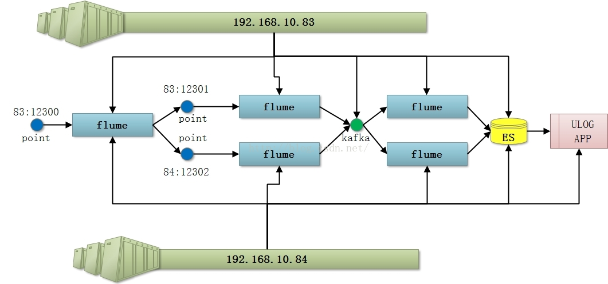
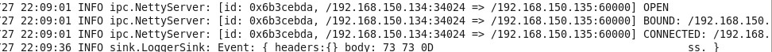
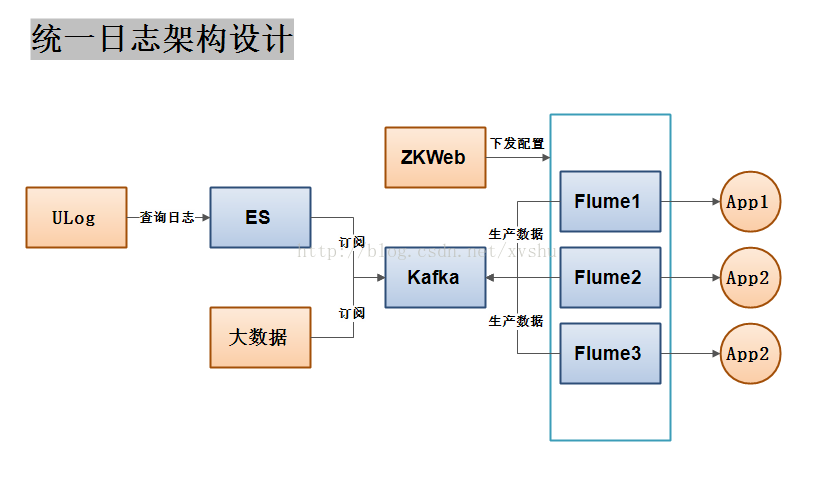

上篇博客中，我们提到了对flume的使用，但是，只是简单的使用，在高并发的情况下就会有问题，我们举两个例子：
1，在高并发下，Channel使用memory，如果使用默认配置，那么就会较快的情况下，塞满内存，造成大部分数据丢失，对的，你没有听错，memory类型的通道，是会丢失数据的，因为单纯的内存，虽然速度很快，但是当速度无法阻挡数据增长时，有些数据无法缓存，或者将内存型的缓存撑爆，我们就必须要考虑，如何优化这种结构。
2，在高并发下，flume的单点承受能力是有限的，如果没有对应的分流措施，我们依然会丧失数据，数据是宝贵的，我们的每份数据都应严肃对待。
为了解决以上问题，我们提供一种参考方案：
优化结构图示：

1，改善Channel
1.1 参数调优
将flume中memory的参数进行调整，主要优化两个参数：
a1.channels.c1.capacity = 1000000
a1.channels.c1.transactionCapacity = 10000
第一个为最大缓存的量，第二个为每次最大交易的量
1.2 改变类型
如果不能接受memory可能丢失数据的方案，我们一般采用file的方式替换channels类型。
2，搭建flume负载均衡
借鉴常见的方案如下：
假设：现有两台机子，命名为：agent，collect。agent IP地址为：192.168.150.137，collect为192.168.150.135
要求：实现agent到collect的连接，并能向collect发送日志。
步骤：
两台电脑上分别装上 jdk,flume-ng（不是flume-og），配置好profile。具体参见百度。
agent的处理
(1)找到flume-ng安装目录下的conf文件夹，新建test.conf
#name the components on this agent
a1.sources = r1
a1.sinks = k1
a1.channels = c1
# Describe/configure the source
a1.sources.r1.type = netcat //这里的数据源设置成netcat，后面将通过telnet传送信息
a1.sources.r1.bind = 0.0.0.0 //建议
a1.sources.r1.port = 44444
# Describe the sink
a1.sinks.k1.type =avro
a1.sinks.k1.hostname=192.168.150.135 //collect 的IP地址，注意
a1.sinks.k1.port=60000 //这里的接口要与collect source的接口一致。
# Use a channel which buffers events in memory
a1.channels.c1.type = memory
a1.channels.c1.capacity = 1000
a1.channels.c1.transactionCapacity = 100
# Bind the source and sink to the channel
a1.sources.r1.channels = c1
a1.sinks.k1.channel = c1
设置好后，暂时不要开启agent。
3.下面设置collect，同agent，新建test.conf 文件
# Name the components on this agent
a1.sources = r1
a1.sinks = k1
a1.channels = c1
# Describe/configure the source
a1.sources.r1.type = avro
a1.sources.r1.bind = 192.168.150.135 //绑定本机的IP的地址
a1.sources.r1.port =60000 //接口要与agent sink的port一致
# Describe the sink
a1.sinks.k1.type = logger
# Use a channel which buffers events in memory
a1.channels.c1.type = memory
a1.channels.c1.capacity = 1000
a1.channels.c1.transactionCapacity = 100
# Bind the source and sink to the channel
a1.sources.r1.channels = c1
a1.sinks.k1.channel = c1
4.设置好之后保存退出，输入命令：（当前目录为$FLUME_HOME/conf）
flume-ng agent -n a1 -c conf -f test.conf，若没有问题在agent机上输入命令：
flume-ng agent -c conf -f test.conf -n a1 -Dflume.root.logger=INFO,console
collect机上会出现：
则表示没有问题。
进入下一步
5.在agent另开一个 terminal,输入 telnet 127.0.0.1 44444 后（需要安装，yum install telnet）
Trying 127.0.0.1...
Connected to 127.0.0.1.
Escape character is '^]'.
然后就可以输入如：ss，enter后到collect机上查看
经过这些步骤的优化，我们基本可以完成对flume的优化，现在看看我们公司使用flume是如何部署这些应用的：
1，整体部署图：

先放大招，以后会逐个介绍，大家期待啊！！！